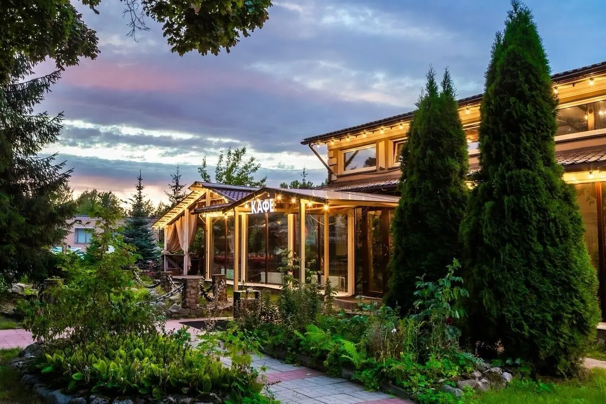
Ломоносов · напротив входа в парк Ораниенбаум
Кафе «У Иваныча»
Домашняя кухня у парка: пельмени и вареники ручной лепки, чебуреки с говяжьим бульоном, борщ и шашлык.
- 4,9 на Яндекс Картах · 580 оценок
- «Хорошее место 2026»
- Ежедневно 11:00–23:00
Кормим по-домашнему уже 25 лет
Пельмени и вареники лепим руками, борщ подаём со сметаной, салом и зелёным луком, а чебуреки — с горячим говяжьим бульоном. После прогулки по Ораниенбауму к нам удобно зайти погреться: вход в парк прямо напротив.
Можно посидеть в уютном зале, на летней террасе или на веранде, взять еду с собой или заказать доставку.
- Летняя террасаи зимняя веранда в саду
- Банкетный залдва этажа, танцпол
- Детское менюи детский стульчик
- Бесплатная парковкадля гостей кафе
Что попробовать
-
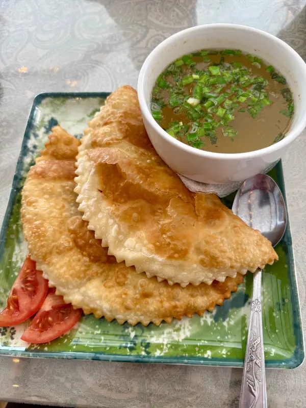
Фирменное от Иваныча: чебуреки с говяжьим бульоном2 шт. · 180 г / 250 мл550 ₽ -
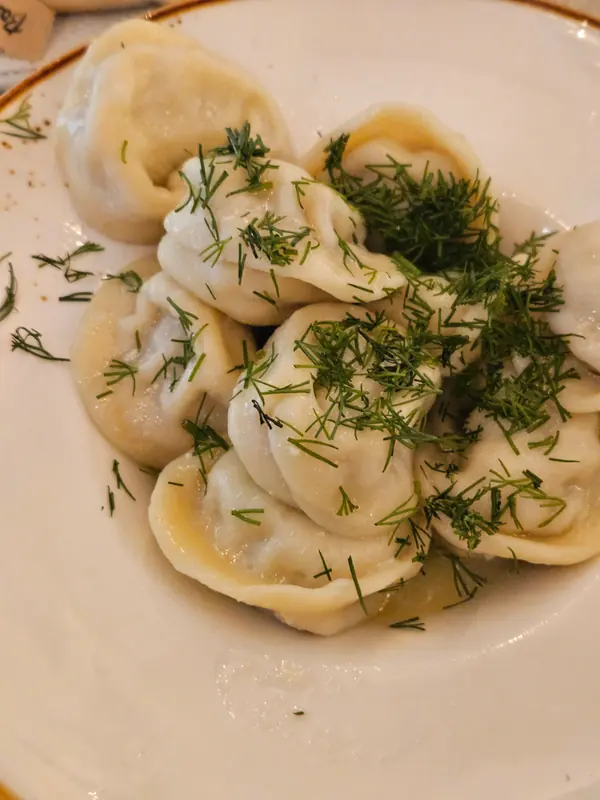
Пельмени ручной лепки8 видов, по 9 штукот 410 ₽ -
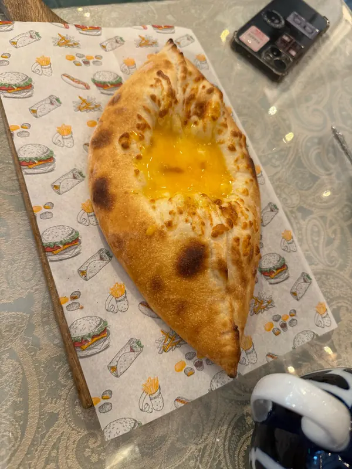
Хачапури по-аджарски330 г · три вида сыра, яйцо560 ₽ -
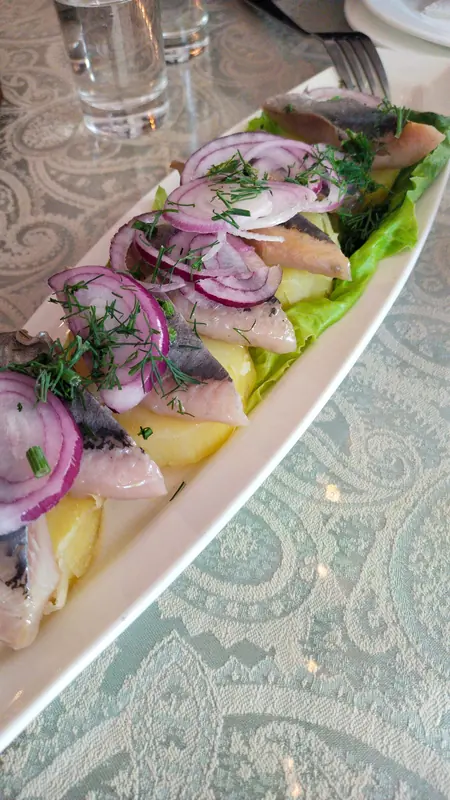
Сельдь бочковая с картофелем190 г · с луком420 ₽
Доставка
Привезём наши блюда домой: работают свои курьеры. Заказ по телефону, условия доставки подскажет администратор.
Заказать по телефонуС собой
Блюда упакуем навынос, ланч-бокс стоит 30 ₽. Есть кофе и чай с собой, удобно взять на прогулку в парк.
Банкеты и праздники
Банкетный зал на два этажа с танцполом. Проводим свадьбы, дни рождения и юбилеи, корпоративы, крестины и поминальные обеды. Можно забронировать стол или арендовать зал целиком.
- Поминальный обедот 2 500 ₽
- Корпоратив, крестины, банкетот 3 500 ₽
- Свадьба, венчаниеот 3 700 ₽
- День рождения, юбилейот 3 700 ₽
- Бронь стола до 10 человек, аренда залапо договорённости
Точную стоимость и меню праздника уточняйте по телефону.
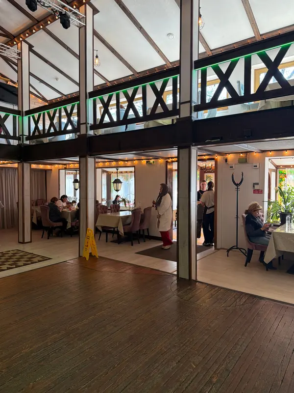
Кормим группы комплексными обедами: салат, первое, горячее с гарниром, напитки, хлеб и сладкое.
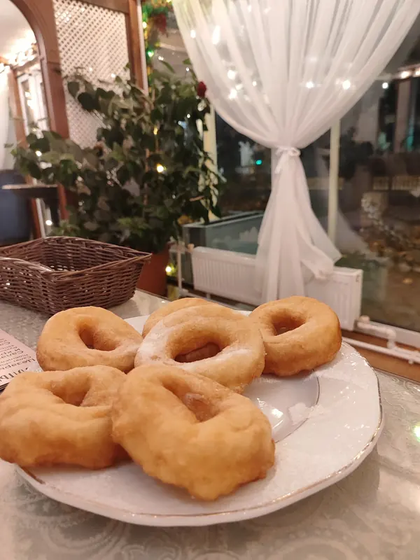
Соседний дом, Первомайская 3В
«Пышка & Чебурек»
Наша пышечная напротив входа в парк Ораниенбаум. Горячие питерские пышки с сахарной пудрой, чебуреки, кофе и чай с собой.
- Часы работыежедневно 10:30–20:00
- Рейтинг★ 5,0 на Яндекс Картах
Как у нас
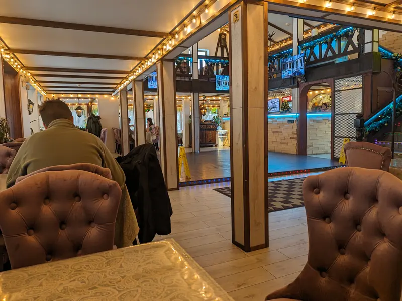
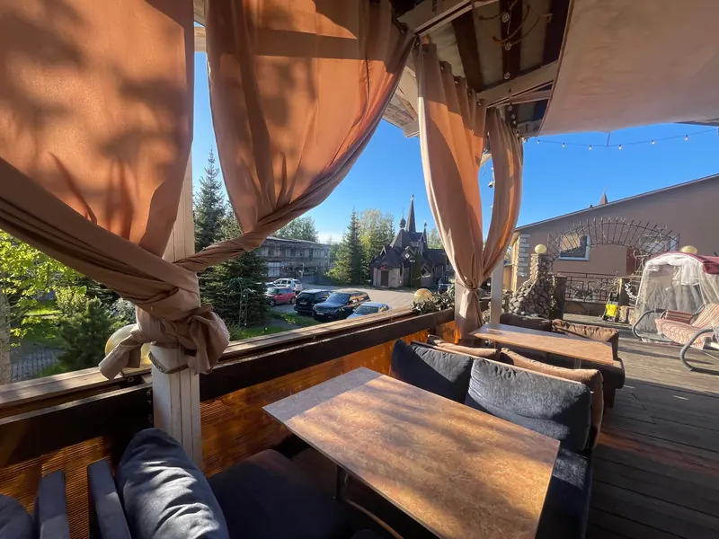
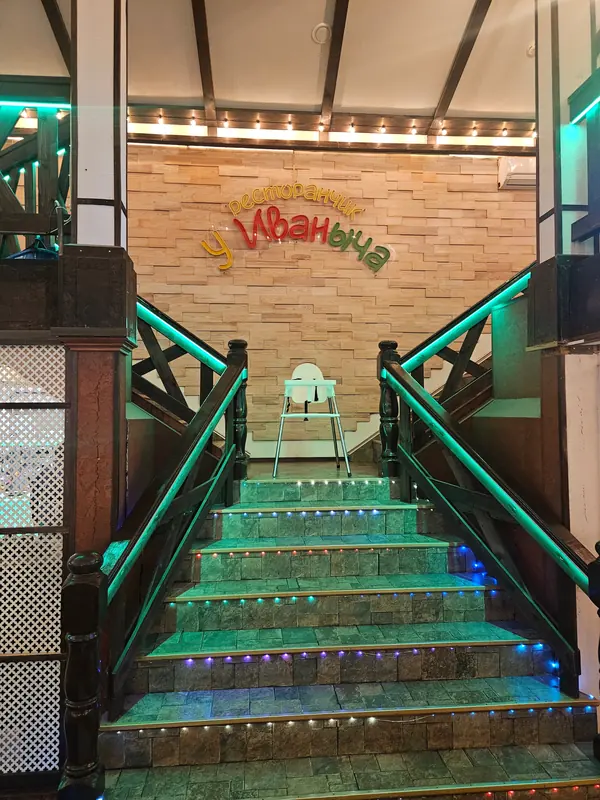
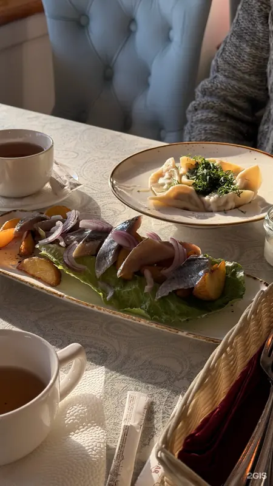
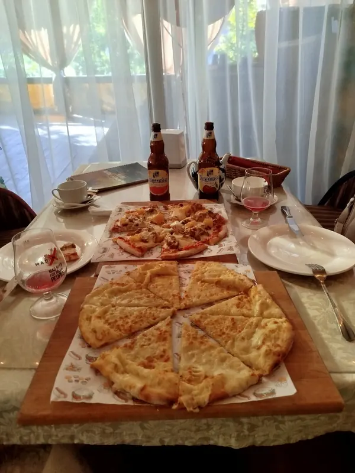
Что пишут гости
4,9 580 оценок на Яндекс Картах
Очень всё не сложно… по-домашнему, по-простому. После прогулки в парке — очень хорошо тут погреться. Милый интерьер. Чисто.
Ольга · ноябрь 2026
Очень довольны выбором заведения для обеда после долгой экскурсии в парке. Все заказанные блюда принесли быстро, еда действительно вкусная… Цены адекватные. Спасибо!
Анна · октябрь 2026
Обалденные пельмешки! Очень удобно после прогулки прогреться и насладиться уютной атмосферой.
Ирина · октябрь 2026
Меню разнообразное… Понравились абсолютно все заказанные блюда, в том числе лагман и пельмени ручной работы. Спасибо! У вас супер!
Лилия · октябрь 2026
Уютное место, приятная музыка, хорошее обслуживание. Вкусно и не дорого.
Женя · ноябрь 2026
Очень вкусно, бюджетно и есть парковка для посетителей.
Слава · октябрь 2026
Как нас найти
- Адрес
- Ломоносов, Первомайская ул., 3Б
напротив входа в парк Ораниенбаум - Часы работы
- ежедневно 11:00–23:00
- ВКонтакте
- vk.com/yivanychaa
- Оплата
- карта, QR-код, наличные